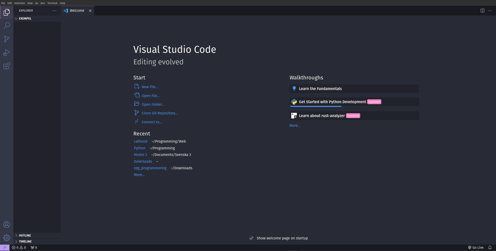

Intro
VSCode (Visual Studio Code) är programmet vi kommer jobba i under webbutveckling, det är där vi skriver all kod. Ni kan ladda hem programmet genom att klicka på den här länken
VSCode är vad som kallas för en IDE (Integrated Development Environment) vilket är ett program som är gjort för programmering. I VSCode så kan man skriva, kompilera, köra och undersöka program. Men vi kommer endast använda det för att skriva kod i samt köra en webbserver med.
När ni har laddat hem VSCode så kan ni trycka på File uppe i vänstra hörnet, sedan Open Folder... och sist välja en mapp där ni sparar alla i filer i. Efter ni har gjort det borde det se ut såhär:
På den vänstra sidan så har ni nu en kolumn där ni kan se alla filer i mappen ni valde, om mappen är tom så borde inget dyka upp där.
Längst till vänster så kan ni klicka på knappen som ser ut som 4 lådor fast den upp i högra hörnet flyger. När ni har gjort det så borde Extensions menyn kommer fram. Sen kan ni söka i sökrutan längst upp på Live Server och trycka Install på den. Efter ni har gjort det kan ni trycka på knappen längst upp i vänstra hörnet som ser ut som 2 dokument. Då borde ni komma tillbaka till menyn ni var i innan.